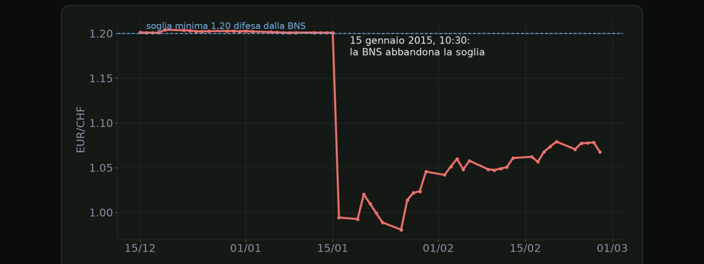

Materiale educativo, non consulenza finanziaria. Il trading con leva su forex, CFD e futures comporta un rischio elevato: puoi perdere tutto il capitale. Numeri, esempi e simulazioni non prevedono risultati futuri.
Guerre e crisi geopolitiche: l'esempio del 24 febbraio 2022.
Apriamo il modulo sugli eventi straordinari, cioè tutto quello che non trovi sul calendario economico. Guerre, crisi politiche, decisioni a sorpresa. Non si possono prevedere, ma si può capire come reagiscono i mercati, e soprattutto come proteggersi. Partiamo dalla geopolitica.
| Mercato | Reazione |
|---|---|
| Petrolio | il Brent supera i 100 dollari, sopra i 130 a inizio marzo |
| Oro | sale subito, sopra i 2.000 dollari a inizio marzo |
| Borse europee | forti cali, più esposte alla crisi |
| Euro | si indebolisce, per la vicinanza al conflitto e l'energia |
In generale, la reazione dei mercati a un evento geopolitico segue spesso tre fasi. Prima arriva la paura. I rifugi salgono, mentre borse e valute considerate più rischiose scendono. Poi il mercato si chiede quali siano i canali concreti, cioè come l'evento colpisce l'energia, le materie prime, il commercio e l'inflazione. Nel caso dell'Ucraina il canale principale è stato l'energia, con effetti sull'inflazione europea per molti mesi. Spesso, infine, arriva un rientro. Se l'evento non cambia davvero l'economia, la paura si sgonfia, e una parte dei movimenti iniziali si riassorbe. Molti eventi geopolitici, storicamente, hanno avuto effetti brevi sui mercati.
Come ci si protegge, visto che questi eventi non si possono prevedere? Prima regola, non inseguire la notizia. I primi minuti dopo un evento sono i più caotici, con spread larghi e movimenti in entrambe le direzioni. Seconda regola, quando le tensioni crescono, riduci la dimensione delle posizioni. Spesso i segnali arrivano giorni prima, con notizie sempre più preoccupanti. Terza regola, guarda quali delle tue posizioni sono esposte, per esempio su petrolio, oro o valute dei paesi vicini alla crisi, e chiediti cosa succederebbe se l'evento peggiorasse.
Brexit, 23 giugno 2016: quando il mercato sbaglia la previsione.
Le elezioni e i referendum sono eventi particolari. La data si conosce in anticipo, ma il risultato no. E quando il mercato si è convinto di un esito e ne arriva un altro, il movimento può essere enorme. L'esempio classico è il referendum sulla Brexit.
| Prima del voto | il mercato si aspetta la vittoria del restare |
| Sterlina la sera | intorno a 1,50 contro il dollaro |
| Durante lo spoglio | i risultati indicano l'uscita |
| Il mattino dopo | sterlina vicino a 1,32, minimi da oltre trent'anni |
Cosa ci insegna questo episodio? Che il prezzo prima del voto contiene già una scommessa sul risultato. Più il mercato è sicuro di un esito, più forte è la reazione se arriva quello opposto. Che i risultati arrivano spesso di notte, quando la liquidità è bassa, e i movimenti diventano ancora più violenti. E che in quei momenti gli stop possono essere eseguiti molto lontano dal livello impostato, perché mentre tutti vendono è difficile trovare qualcuno che compri. Questo si chiama slippage.
Come comportarsi, quindi, con elezioni e referendum? Segna in calendario le date delle elezioni e dei referendum nei paesi delle valute che tratti. Prima del voto, chiudi o riduci molto le posizioni esposte. Tenere una posizione piena durante lo spoglio è una scommessa, non un'operazione pianificata. E aspetta il giorno dopo. Le opportunità migliori arrivano spesso quando il risultato è chiaro e la liquidità è tornata normale.
Banca nazionale svizzera, 15 gennaio 2015.
Di solito le banche centrali preparano il mercato con largo anticipo. Ma qualche volta decidono a sorpresa, e l'effetto può essere devastante. Il caso più famoso è quello della banca centrale svizzera, il quindici gennaio del 2015.
| Momento | Cosa succede |
|---|---|
| Dal 2011 | la banca centrale svizzera difende un minimo a 1,20 su euro franco |
| Pochi giorni prima | ripete che il minimo resta una priorità |
| Mattina del 15 gennaio | annuncia a sorpresa la fine del minimo |
| In pochi minuti | euro franco crolla fino a circa 0,85, poi risale verso 1,00 |

Ecco il cambio euro franco nei giorni intorno al quindici gennaio 2015, con le chiusure giornaliere. Per settimane la linea è piatta sopra uno virgola venti, la soglia difesa dalla banca centrale. Poi il salto: in un giorno il cambio passa sotto l'uno, e nei giorni successivi chiude fino a zero virgola novantotto. Le chiusure non mostrano il minimo di quella mattina, molto più basso. A fine febbraio il cambio è risalito solo verso uno virgola zero sette.
Le conseguenze sono state pesantissime. Molti stop non sono stati eseguiti al livello impostato, perché il prezzo ha saltato interi livelli senza che ci fossero scambi. Molti conti sono finiti con un saldo negativo, cioè i trader si sono ritrovati a dover denaro al proprio broker. E alcuni broker sono falliti, mentre altri hanno avuto bisogno di finanziamenti di emergenza per sopravvivere.
Cosa ci insegna questo episodio? Che nessun livello è garantito, neanche quando una banca centrale dice di volerlo difendere. Che lo stop limita il rischio solo quando il mercato si muove in modo continuo. In un salto improvviso, la perdita può essere molto più grande del previsto. Per questo la dimensione della posizione deve sempre tenere conto di eventi estremi. E che conviene verificare se il tuo broker offre la protezione dal saldo negativo, che impedisce al conto di andare sotto zero. In Europa è obbligatoria per i clienti retail dei broker regolamentati.
Gli interventi del Giappone sullo yen nel 2022 e nel 2024.
Un altro evento straordinario, ma che si può in parte anticipare, è l'intervento di un governo sul mercato dei cambi. Succede quando una valuta si indebolisce troppo e troppo in fretta. Il caso più studiato degli ultimi anni è quello del Giappone.
| Periodo | Cosa succede |
|---|---|
| Settembre 2022 | dollaro yen intorno a 145: primo intervento dal 1998 |
| Ottobre 2022 | dollaro yen vicino a 152: nuovo intervento |
| Aprile e maggio 2024 | dollaro yen oltre 160: interventi |
| Luglio 2024 | nuovo intervento dopo un dato USA |
Anche se l'intervento arriva a sorpresa, ci sono dei segnali. Il mercato ricorda i livelli in cui si è già intervenuti, e diventa nervoso quando il prezzo si avvicina. Le autorità usano parole sempre più forti, per esempio dicendo che i movimenti sono eccessivi o che sono pronte ad agire con decisione. È il cosiddetto intervento verbale. E conta molto la velocità. Le autorità di solito dicono di non avere un livello preciso, ma di guardare ai movimenti troppo rapidi.
| Prima | dollaro yen sale da settimane |
| Intervento | in pochi minuti scende di diverse figure |
| Dopo | spesso il prezzo recupera una parte nei giorni successivi |
| Per chi era lungo | stop eseguiti con slippage |
Le grandi crisi e il rischio di tenere posizioni nel fine settimana.
Chiudiamo il modulo sugli eventi straordinari con le grandi crisi finanziarie e con un rischio molto concreto per ogni trader, il gap del fine settimana. Il mercato chiude il venerdì sera, ma le notizie continuano ad arrivare.
| Origine | mutui e banche |
| Momento chiave | fallimento di Lehman Brothers, 15 settembre |
| Durata | mesi di forte volatilità |
| Origine | pandemia |
| Momento chiave | marzo, crollo e corsa alla liquidità |
| Risposta | banche centrali e governi in poche settimane |
La crisi del 2008 nasce dai mutui americani e dalle banche. Il momento chiave è il fallimento della banca d'affari Lehman Brothers, il quindici settembre del 2008, annunciato proprio all'inizio della settimana dopo un fine settimana di trattative fallite. Seguono mesi di forte volatilità su tutti i mercati. La crisi del 2020 nasce invece dalla pandemia. Il momento più duro è marzo, con il crollo delle borse e la corsa alla liquidità che abbiamo visto nel modulo sui beni rifugio. Questa volta, però, banche centrali e governi rispondono in poche settimane, e i mercati si riprendono più in fretta.
Parliamo ora del gap del fine settimana. Il gap è la distanza tra il prezzo di chiusura del venerdì e quello di apertura della domenica sera. Di solito è piccolo, ma a volte è grande. Succede perché durante il fine settimana possono arrivare notizie importanti, come elezioni, decisioni politiche, attacchi o salvataggi di banche, e il mercato non può reagire finché non riapre. La conseguenza è che lo stop non protegge al livello impostato. Viene eseguito al primo prezzo disponibile alla riapertura, che può essere molto peggiore.
| Venerdì sera | lungo su un cambio, stop 30 pip sotto, rischio 1% |
| Durante il weekend | arriva una notizia molto negativa |
| Domenica sera | il mercato riapre 90 pip più in basso |
| Risultato | stop eseguito a -90 pip: perdita del 3% invece dell'1% |
Come si gestisce questo rischio? Chiudendo o riducendo le posizioni il venerdì, soprattutto quando nel fine settimana sono in programma eventi importanti, come elezioni o vertici. Se tieni posizioni aperte, calcola la dimensione pensando a un possibile gap, non solo alla distanza dello stop. E facendo attenzione alla riapertura della domenica sera, quando gli spread sono molto larghi e conviene evitare di aprire nuove posizioni.
Spunta ogni punto solo se sapresti spiegarlo a voce a un altro trader.
Materiale educativo, non consulenza finanziaria. Il trading con leva su forex, CFD e futures comporta un rischio elevato: puoi perdere tutto il capitale. Numeri, esempi e simulazioni non prevedono risultati futuri. · riskly.trade